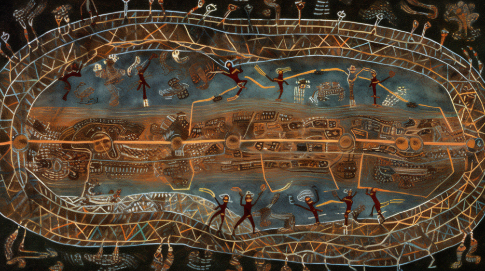
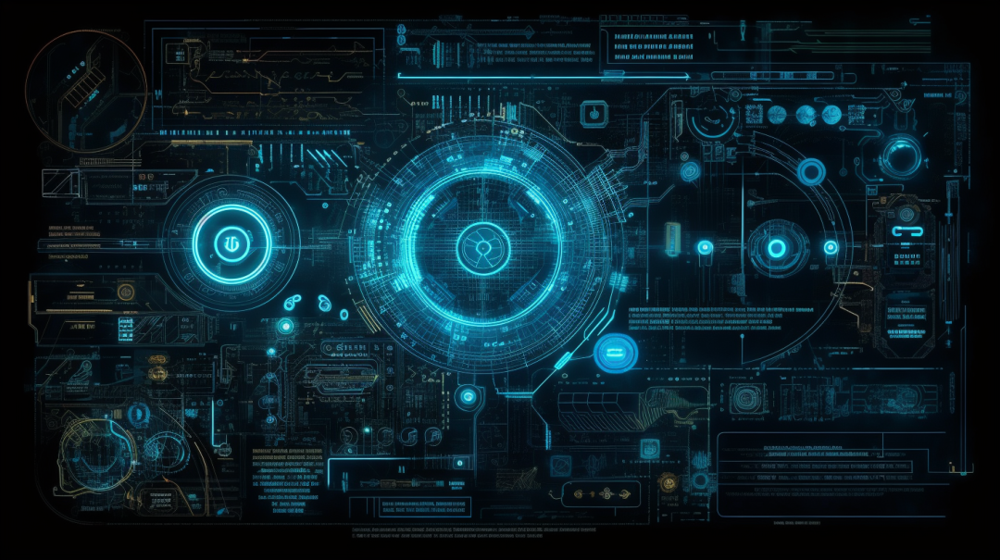

NO.8
Jul.
作为人类社会发展的关键一环，我们的信任体系已然被资本和大数据为代表的软性极权所操控。人类日渐失去数据主权，甚至最为宝贵的自由意志。借助区块链和零知识证明技术，我们终于有望以“数据共鸣”的方式，取代消费享乐和算法引导，夺回丧失掉的个人数据掌控权。
歪脖三观
文/ 翁浩，歪脖三观联合发起人
编辑/ 卡卡
现代资本主义已变成新的软性极权主义，它以强迫的消费和算法的引导，塑造了虚假的意识，矮化了我们的思考能力，阻碍了一个更好的社会的诞生。人们过着单调重复的生活，被迫加入各种生产组织，接受资本的剥削。
而Metaverse这样的新生事物，更是极容易被各种算法、叙事所操控，人们的思维和行为都在无形中被塑造。
我们日渐失去最宝贵的自由意志。
01
信任这个概念，一直贯穿在人类历史进程中。它不仅是人们之间情感连接的纽带，也是人类社会进步的粘合剂。在早期社会，人们需要信任彼此，以便共享资源，进行狩猎，因此建立了最初的社区。如果没有信任，人类就无法进行有效的协作，人类社会在初始阶段可能就会消亡。
随着历史车轮滚滚向前，社会越发复杂，信任的价值越发显现。人们持有各种信用货币，信任央行能够保证货币的购买力；人们把劳动所得的钱换做银行的储蓄，信任银行、法律以及监管机构会保障资金的安全；人们在深夜的城市街头漫步，信任陌生人不会对你产生威胁，信任城市的治安机构能够保障人身的安全。这种信任的扩张，使得人们能够在更大规模和更高效率下进行社会交换，推动了经济的发展，也推动了社会的进步。商业交易，条约签订，乃至国际外交，无不需要信任作为基础。
然而，历史告诫我们，信任的滥用会导致严重的后果。2008年全球金融危机，美国投资银行滥用投资者对他们专业能力的信任，制造出一堆风险极高的金融产品，最终导致全球金融体系的崩溃。还有Facebook的数据隐私丑闻，亿万用户对Facebook的信任被滥用，他们的个人数据被无节制地用于商业推广和政治宣传，这严重损害了全球范围内的数据隐私权益。
因此，如何在陌生人之间建立和维护高质量的信任关系，同时管理和减少信息的不对称，从而避免信任的滥用，是我们当前面临的重要问题。

02
信任的形成是个复杂且微妙的过程，它通常基于我们对世界的理解，而这种理解则大多取决于我们所处的叙事环境。不过，这个叙事环境并非自然生成，而是由特定的个体、群体或机构控制和塑造的。他们不仅决定哪些故事会被讲述，还决定这些故事会被如何讲述。这就是叙事权力。这个概念可能听起来有些抽象，但实际上它无处不在，例如新闻报道、历史教科书、电影、小说，甚至是品牌广告。
叙事，其实就是把复杂的现实情况编织成易于理解和记忆的故事。在这个过程中，作者强调某些细节，塑造特定的价值观和主题，形成一种特定的解读框架。日积月累，这些故事形成了我们的固定印象，从而影响了我们对世界的理解，甚至对他人的信任。比如，可口可乐的广告总是会构建出一幅快乐、温馨的生活画面，我们就会潜意识里把"可口可乐"与美好时光联系在一起。
历史上，叙事权力常常握在王权和神权手中，他们通过控制叙事来维护信任链。古代君王会声称自己是神的后代，以此来保证他们的统治地位，让人民对王权充满信任；宗教权力会通过宗教教义，比如《圣经》、《古兰经》等，构建特定的宗教叙事，进而维护他们的信仰体系，让信徒对教廷充满信任。而印度的种姓制度则通过深远的宇宙创世神话为其等级秩序提供了神圣的正当性，塑造了一种人们无法挑战、至今仍然有上亿人接纳的信任体系。
随着历史的推进与科技的发展，这种叙事权力的分布开始发生变化。科技为我们带来了更多的信息，更多的故事，也带来了更多的叙事权力。不仅仅是政府，教育机构，甚至每个普通人都可以通过互联网分享他们的故事，塑造他们的叙事。这使得叙事更加多元化，也使得信任的形成更加复杂。
然而，这并不意味着叙事权力的集中就此消失。相反，新的力量正在把握叙事权力，他们就是资本和大数据。通过控制科技，利用大数据，他们在重新定义我们的叙事环境，进而改变我们的信任体系。他们的影响力，不仅仅体现在商业领域，也正在改变我们的社会结构和价值观。
03
自工业革命以来，科学理性的叙事逐渐主导了我们的世界。电力的广泛应用、飞机的发明、计算机和互联网的兴起，每一个科技创新的步伐，都在改变着我们对世界的认识，让我们对科技抱有了前所未有的信任。我们相信科学和技术是解决问题、改善生活的关键。但是，随着时间的推移，科学的叙事权力正在被资本和大数据重新定义。
进入20世纪晚期，资本主义社会中消费主义和大数据的崛起，给权力争夺带来了新的转变。大公司和政府通过收集和分析大数据，以消费者的喜好和行为为依据，制定出更精准的营销策略和政策决策。这使得他们重新掌握了社会的叙事权，塑造和引导公众的观念和行为。在这个过程中，资本并不是简单地接受科学叙事，而是主导和塑造科学叙事，将科学和商业利益结合，引领了科技创新的方向。
以社交媒体为例，虽然起初被视为自由表达和全球连接的工具，但现在更多被视为推动消费主义和个性化广告的平台。大数据技术使得社交媒体公司能够精准地了解用户的喜好、习惯和行为，然后将这些信息转化为推动用户消费的工具。我们不再是社交媒体的用户，而是成为了产品。我们的行为、感情甚至信任都被算法解析并转化为资本的利润。
我们不再仅仅信任科学和技术，我们也开始信任那些掌握科技的资本和品牌。我们信任他们提供的产品和服务，信任他们的算法推荐，在愈发复杂的科技面前，也选择信任他们的专业知识和解释。
然而，这种信任关系并不是平等的。资本和大数据控制了叙事的权力，他们获得了信息的筛选和排序的权力，决定了哪些信息可以获得人们的优先注意。他们正在塑造这个世界的价值观，定义普通人的需求和欲望。
这种叙事权力不再只是关于科技的理解，而是关于我们如何看待自身，如何理解和应对世界，最终将决定我们未来的社会形态和价值观。
04
现代社会在大数据的浪潮下，人们更愿意接受所处环境的主流叙事，信任链日益单一化，却不自知其危。在这个数据主导的世界里，我们的行为、思维、信念甚至是梦想都被数据化，并以此来引导我们做出决策。这种量化的方式往往忽略了我们作为个体的复杂性和多样性，将我们简化成一堆数据，我们的内在世界被剥夺了其本质的多样性和丰富性。
在过去，叙事的垄断往往意味着权力的固化，成为社会进步的障碍。比如中世纪的欧洲，长期处于教会的叙事控制之下。人们信任教会的任何解释，新的思想观念难以生长，社会的发展处于停滞状态。随着文艺复兴的到来，欧洲开始重新审视古希腊和罗马的文化遗产，科学家、艺术家和学者们开始挑战传统的观念，欧洲社会逐渐走向了现代化。
这清楚地表明，多元化的叙事能够促进不同观点的碰撞，引发创新思考，形成新的信任体系，进而推动社会的进步。而在现代社会，大数据和资本的叙事权力正在引导我们走向单一化，新的科技宗教、资本宗教重新形成，选择性忽视或屏蔽那些创新的、不符合主流的思想。
叙事多样性与信任的关系是微妙的。一方面，多样性可以增强社会的活力和创新能力，促进社会的发展；另一方面，多样性可能会导致信任的瓦解，形成社会的混乱。这就需要我们在叙事多样性和信任之间找到一个平衡。
我们需要认识到，叙事的权力不仅仅是关于信息的筛选和解读，也是关于我们如何看待世界，如何定义我们自己的问题。我们需要挑战权力的固化，重塑人类自由意志，促进新秩序的诞生。
05
自由意志是一种人类的特性，人们不受任何外在力量的控制，有能力自主决定自己的行为，并对行为负责。然而，在当前的资本和大数据主导的环境下，我们的自由意志正在受到挑战。
在大数据的驱动下，我们的行为、选择，甚至思想，都被精准捕捉并预测。我们越来越多地依赖于预测模型，而非我们自己的判断。而资本主义的叙事又强调物质享乐和消费主义，为了利润最大化，他们会通过叙事制造出人为的需求，人们被鼓励通过购买和消费来获得满足和快乐。我们的自由意志正在被悄悄侵蚀。
重塑自由意志的关键在于从大数据和资本主义的掌控中夺回我们的数据控制权。控制自身数据不代表抵制大数据，而是要了解并选择我们的数据来源及其应用方式。这样，我们才能免受大数据和资本主义的操纵。
控制自我数据之所以重要，乃是因为这些数据直接反映我们的生活，包含我们的喜好、习惯、关系、甚至情绪和思维，是我们深度理解自我，做出自主选择的依据。我们有权也有责任防止其被滥用。
当然，夺回和控制数据并非易事，需要我们掌握数据分析、鉴别数据质量和可靠性的技巧，需要恰当的技术、资源和法律保护。然而，挑战的存在并不是放弃行动的理由，这事关我们的自由和尊严。生存本无意义，意义在于我们如何去发现，去创造。

06
区块链技术，始于比特币激进而独立的宣言，旨在挑战现有金融系统，并以去中心化的方式保护个体的经济自由。这一激进的理念展现了比特币网络的核心精神，并引领了一系列的去中心化货币项目。比特币创始人中本聪花了18个月的时间编写代码，然后在2009年发布比特币白皮书。他在比特币的创世区块中嵌入了一条信息:"The Times 03/Jan/2009 Chancellor on brink of second bailout for banks"，作为对传统金融体系不公和危机的挑战。中本聪的目标是通过比特币和区块链技术，建立一个公平、透明且不能被权力操控的新的金融体系。
区块链技术采用去中心化的方式，为我们提供了一个新的视角和工具来建立人与人的信任关系，同时也有可能赋予我们对自身数据的更大控制权。本质上，区块链是一个公开的分布式数据库，它以不可篡改和公开透明的方式储存数据，并通过加密算法和共识机制，实现数据的安全性和一致性。这种去中心化的方式意味着数据不再由一个中心化的实体（如政府、银行或大公司）控制，而是分散在网络的所有参与者之间。这使得数据的掌控权得以下放，每个人都可以参与和验证数据的真实性。
这种分布式的信任机制在一定程度上解决了传统中心化系统中的许多问题，但也带来了新的挑战。其中一个重要的挑战就是如何在保证数据透明和共享的同时，保护个人隐私。这是在区块链上实现自我数据掌控的重要考虑。
此时，零知识证明的出现就显得尤为重要。零知识证明是一种密码学方法，它允许一方（证明者）向另一方（验证者）证明一个断言为真，而无需向验证者透露任何其他信息。这意味着，你可以证明你拥有某些数据或满足某些条件，而无需公开任何具体的数据。这不仅能保护你的隐私，同时也能让其他人信任你的断言。在区块链上，你可以选择哪些数据被公开，哪些数据通过零知识证明进行验证。它将加强我们对自身数据的掌控，使得每个人都有可能拥有对自己数据的完全掌控。
例如，在区块链与零知识证明的技术下，网络购物者的数据储存在分布式区块链上，只有购物者能访问。而利用零知识证明，购物者可以在不透露具体购物记录的情况下，证明自己满足优惠活动的参与条件。
在未来的数字世界中，区块链与零知识证明将共同构建一种去中心化、透明而又对隐私加以保护的数据共享模式。这一模式将我们从传统的中心化权威机构和单一的信息体系的束缚中解放出来，为我们提供了重新定义和建立信任的可能。我们可以信任这样的去中心化协议，信任每一次基于此协议进行的公开、可验证的交互结果。更重要的是，我们可以开始信任自己——信任自己的数据权利，信任自己的隐私，信任自己在这个数字世界中作出的每一次决策。
不过我们要认识到，区块链也是一种新的叙事，当一部分节点拥有的计算能力远高于其他节点，或者能源成本远低于其他节点，他们将获得更大的叙事权力。亦或是零知识证明一旦被破解，也可能引发系统性的信任危机。我们需要自行判断是否可以信任这种机制。但无论如何，它提供了一种可能性。
07
当我们回溯到互联网的初期，人们那时往往会自行寻找自己热衷的内容，仿佛在一座浩瀚的图书馆中，只要有足够的耐心，就总能在其中寻得答案。如今，我们有机会通过运用区块链和零知识证明的技术，重新夺回我们失去的数据主权，防止中心节点利用数据对我们的认知进行操控。在此，我提出的“数据共鸣”这个概念。
数据共鸣的理念源于物理学中的共振现象。当两个频率相近的体系接触时，它们会开始共鸣，频率和振幅都会呈现出一种和谐的匹配。这种现象，虽然源自物理，却有着深刻的社会和哲学含义。共鸣并不意味着单一的复制或者服从，而是一种互动和对话，一种在尊重个体差异的同时，寻找共识和创造信任关系的可能。
和传统的中心化机构的数据匹配相比，数据共鸣是一种基于自由意志的数据交互方式，我们有权选择如何使用我们的数据，与谁产生共鸣，以及何时与何地进行这种共鸣。因此，我们可以创建一个分散的，去中心化的数据网络，每个人都能对自己的数据进行主导和掌控。通过零知识证明，我们能在保护隐私的同时，分享并利用这些数据，与其他人产生共鸣。
例如，当前的医疗体系中，罕见病的患者因为数量稀少和病症复杂，常常被边缘化，他们的声音在资本驱动和大数据统计的海洋中几乎听不到。而法律辖区的限制，又使得跨国公司无法有效整合全球范围的罕见病病例，这就让这些罕见病患者的困境更加严重，他们和家人的生活充满了孤独和绝望。
但是，通过数据共鸣，我们终于可以正面回应这个难题。设想我们开发了一个去中心化的区块链协议，这个协议能够链接全球所有罕见病患者，让他们自愿匿名地分享自己的医疗数据，包括病症、治疗过程和效果。这个协议不受任何特定机构或国家的管辖，而是一个属于所有参与者的自由网络。
在这个网络里，每个患者都不再是一个孤独的数字，他们的数据可以和其他的数据产生“共鸣”。这个“共鸣”使得研究者能够对这些数据进行深度分析，从中找出治疗的可能，这为罕见病患者带来了全新的希望。每个个体通过数据分享和连接，为共同的目标作出贡献。
再例如，虽然每位学生的学习节奏和方法都各不相同，但当下的教育体系往往难以对此进行精细对待。在机械化的教育流程中，学生的个性化需求被边缘化，他们的独特声音在应试教育的巨轮下显得微不足道。
然而，通过数据共鸣，学子们可以通过去中心化的学习平台找到与自己学习兴趣和能力相匹配的伙伴，共享他们的学习进度、问题、解决方案和心得体会，而又同时能保护自己的隐私。这样的氛围可以更好地满足他们的求知欲望。这样的平台不被任何特定学校或机构所约束，将成为所有求知者的自由网络。学生不再接受被动的信息灌输，而获得了自主批判能力。
因此，数字共鸣是主体与未来数字世界的对话，是个体在数据世界中保持自己的声音、同时也倾听他人声音、建立深度连接的方式。这是一种对抗单一、冷漠的数字社会的方式，是一种在保持独立的同时，建立基于贡献、公平透明的信任网络的方式。
08
数据共鸣并不是一种理想化的、无障碍的过程。它需要我们具备技术素养和批判能力，掌握自我数据，懂得如何用数据表达自己，通过数据和他人交流。这是一项需要时间和努力的任务，也是一项需要技术和社会支持的任务。
因此，当我谈论数据共鸣时，不仅仅是在谈论一种技术实现的可能，更是在谈论一种对未来社会的期待和挑战。我期待在这个由数据驱动的世界中，找到一种新的方式，以保持人们的自由意志，维护人们的人性尊严。人们可以挑战资本宗教和机械宇宙的叙事，也可以批判和打破现有固化的信任体系。数据共鸣，正是这样一种强大的工具和理念，可以推动人们形成一个个新的共识群落，进而形成一个和平、公平、连接和互相理解的未来世界。
欢迎加入歪脖三观读者群
声明：我们欢迎任何机构转载文章，转载时请务必保留作者、作者介绍、歪脖三观介绍。转载请联系：tiaodengzhiye1（微信ID）。
热
往期精彩文章
HOT！
NO.5 | 价值捕获与合规前行，三代币模型在国内的应用探索